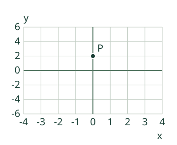
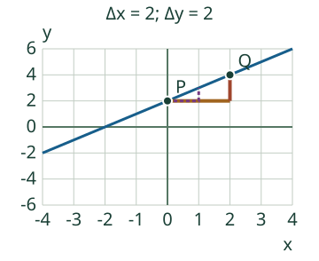
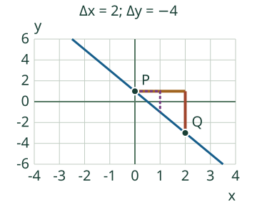

<link rel="stylesheet" href="lesson.css"/>
<section class="linear16" data-linear16>

<section data-teaching-step="1" data-lesson-role="teaching-step">
<p class="purpose">Rakenna yhtälöstä kaksi pistettä ja niitä yhdistävä suora. <span>Aava: Miten y = x + 2 muuttuu suoraksi?</span></p>
<button data-action="step" disabled>Seuraava havainnollinen vaihe</button>
<figure class="current" data-lesson-role="worked-example"><div data-view></div><figcaption data-readout>y = x + 2. Merkitty P; etsi toinen piste eri x-arvolla.</figcaption></figure>
</section>


<section data-teaching-step="2" data-lesson-role="teaching-step">
<details data-tools data-lesson-role="teaching-step"><summary>Mallit ja toiston ohjaus (valinnainen)</summary>
<label>Malli<select data-model disabled><option value="rise">Nouseva: y = x + 2</option><option value="fall">Laskeva: y = −2x + 1</option><option value="flat">Vaakasuora: y = −1</option><option value="half">Puolikas muutos: y = x/2 − 1</option><option value="move_b">Muuta vain b:tä</option><option value="move_k">Muuta vain k:ta</option><option value="water">Siirto: 1 litra ja 2 litraa minuutissa</option><option value="xcut">X-akseli: y = −2x + 4</option><option value="axis">Koko x-akseli: y = 0</option></select></label>
<div class="buttons"><button data-action="play" aria-pressed="false" disabled>Toista vaiheet</button><button data-action="pause" disabled>Pysäytä toisto</button><button data-action="restart" disabled>Alkuun</button><button data-action="end" disabled>Viimeinen vaihe</button></div><p data-running>Vaihetoisto pysäytetty.</p><div data-model-table></div></details>
<p class="jump"><a href="#linear16-practice">Vastaan suoraan harjoitukseen</a> · <a href="#linear16-examples">Katson selitykset</a></p>
</section>


<section id="linear16-examples" data-lesson-role="worked-example"><section data-teaching-step="3-1" data-lesson-role="worked-example"><h2>Kaksi esimerkkiä ja tärkeät erot</h2><h3>Esimerkki 1: nouseva suora</h3><p>Yhtälössä y = x + 2 valinta x = 0 antaa y = 2. Valinta x = 2 antaa y = 4. Pisteet (0; 2) ja (2; 4) määräävät suoran. Myös (−1; 1) ja (1; 3) käyvät. Pisteitä ei tarvitse valita juuri mallin tavoin.</p><figure data-lesson-role="worked-example"></figure></section>
<section data-teaching-step="3-2" data-lesson-role="worked-example"><h3>Esimerkki 2: laskeva suora</h3><p>Kun y = −2x + 1, pisteet ovat esimerkiksi (0; 1) ja (2; −3). x:n lisäys 2 muuttaa y:tä −4. Y-akselin kohta on b = 1; kerroin k = −2 kertoo laskun oikealle kuljettaessa.</p><figure data-lesson-role="worked-example"></figure></section>
<section data-teaching-step="3-3" data-lesson-role="worked-example"><h3>Entä vaakasuora tai puolikas muutos?</h3><p>y = −1 säilyttää saman y-arvon kaikilla x-arvoilla. Yhtälössä y = x/2 − 1 x:n lisäys 2 lisää y:tä 1. Kokonaislukupisteet voivat helpottaa piirtämistä, mutta myös tarkat murtolukupisteet kelpaavat.</p></section>
<section data-teaching-step="3-4" data-lesson-role="worked-example"><h3>Virhekäsitys: suora alkaa aina origosta</h3><p>Suora y = x + 2 kulkee pisteen (0; 2), ei origon kautta. Tarkista kumpikin koordinaatti yhtälöön sijoittamalla. Kaksi samaa pistettä ei määrää suoraa, eivätkä saman x-arvon eri y-arvot kuulu tähän funktioon.</p></section></section>


<section data-teaching-step="4" data-lesson-role="teaching-step">
<section id="linear16-practice" data-audience-columns><div data-visual-column><h2>Kokeile itse</h2>
<label>Tehtävä<select data-task disabled><option value="rise">Piirrän nousevan suoran</option><option value="fall">Piirrän laskevan suoran</option><option value="flat">Piirrän vaakasuoran</option><option value="half">Piirrän puolikkaan muutoksen</option><option value="intercept">Löydän y-akselin leikkauspisteen</option><option value="which">Valitsen yhtälön kuvaajan</option><option value="coefficients">Muodostan k:n ja b:n kuvauksesta</option><option value="xcut">Löydän x-akselin leikkauskohdan</option><option value="none">Vaakasuora ja x-akseli</option><option value="all">X-akseli itse</option><option value="transfer">Piirrän vesimäärän mallin</option></select></label>
<p data-question>Piirrä y = x + 2. Anna mitkä tahansa kaksi sen pistettä eri x-arvoilla näkyvältä alueelta. Rivien järjestys on vapaa.</p>
<div data-task-table></div>
<p data-candidate-legend></p>
<div data-practice-view></div></div><div data-response-column><p>Voit vastata suoraan. Mallin vaiheita ei tarvitse käydä läpi. Palaute koskee vain nykyistä tehtävää.</p>
<div data-fields><label>Piste P: x<input disabled data-answer="0" type="text" inputmode="text" maxlength="128" autocomplete="off" placeholder="Luku tai murtoluku"/></label><label>Piste P: y<input disabled data-answer="1" type="text" inputmode="text" maxlength="128" autocomplete="off" placeholder="Luku tai murtoluku"/></label><label>Piste Q: x<input disabled data-answer="2" type="text" inputmode="text" maxlength="128" autocomplete="off" placeholder="Luku tai murtoluku"/></label><label>Piste Q: y<input disabled data-answer="3" type="text" inputmode="text" maxlength="128" autocomplete="off" placeholder="Luku tai murtoluku"/></label></div>
<div data-adjustments class="buttons"><button data-action="adjust" data-delta="-1" disabled>Vähennä 1</button><button data-action="adjust" data-delta="1" disabled>Lisää 1</button></div>
<p class="small">Lisäys ja vähennys muuttavat toisen pisteen x-kenttää. Voit aina kirjoittaa suoraan.</p>
<button data-action="check" disabled>Tarkista nykyinen vastaus</button>
<p data-feedback data-result="neutral" role="status">Automaattinen tarkistus tarvitsee JavaScriptin. Esimerkit toimivat myös ilman sitä.</p>
<p data-preview-note>Oma vastaus ja annettu kuva erotetaan. Tarkistus tulee painikkeesta.</p>
<details data-lesson-role="hint"><summary>Tarvitsen vihjeen</summary><p data-task-help>Valitse x, laske y = x + 2 ja merkitse pari. Toista eri x:llä.</p></details></div></section>
</section>


<section data-teaching-step="5" data-lesson-role="teaching-step">
<section><h2>Pysähdy ajattelemaan</h2><p>Kun b muuttuu mutta k ei, mikä kuvassa säilyy? Entä jos k = 0?</p><details data-lesson-role="answer"><summary>Yksi perustelu</summary><p>b siirtää suoraa y-suunnassa. k kertoo muutoksen; k = 0 antaa vaakasuoran.</p></details></section>
</section>


<section data-teaching-step="6" data-lesson-role="teaching-step">
<section><h2>Sovellan toiseen tilanteeseen</h2><p>Säiliössä on aluksi 1 litra. Vettä lisätään 2 litraa minuutissa. Merkitse x = aika minuutteina ja y = vesimäärä litroina: y = 2x + 1. Malli kuvaa vain aikaväliä 0…2 min, eikä väitä mitään säiliön tilavuudesta tai myöhemmästä ajasta. Valitse siirtotehtävä ja piirrä kaksi tämän välin pistettä.</p></section>
</section>


<section data-teaching-step="7" data-lesson-role="teaching-step">
<details data-lesson-role="teaching-step"><summary>Lisähaaste</summary><p>X-akselilla y = 0. Yhtälö y = −2x + 4 antaa x = 2. Suora y = −1 ei leikkaa x-akselia, kun taas y = 0 yhtyy siihen kaikilla x-arvoilla. Y-akselin pisteessä taas x = 0. Tehtävävalikossa voit kokeilla kaikkia kolmea tapausta.</p></details>
</section>

<details id="linear16-teacher" data-lesson-role="teacher-note"><summary>Opettajalle, tuen rajat ja käyttö ilman verkkoa</summary><p>Vuosiluokat 7–9. Tämä on atominen osaamiskohde. Ydinesitieto: funktion kuvaajan perusidea (M79-FUNC-GRAPH). Yhtälön ratkaiseminen tukee, mutta siitä ei tehdä uutta aloitusehtoa. Ohjaus ja mallikatselu ovat valinnaisia. Hyväksy oppijan muu oikea päättely tai piirros; valintatehtävä ei yksin osoita piirtämistä.</p><p>Toisto vaihtaa täsmällisiä matemaattisia vaihekuvia. Se ei mittaa fyysistä liikettä. Akselit ja yksiköt ovat kuvassa; kuvan rajaus ei katkaise suoran matemaattista jatkumista abstraktissa tapauksessa. Vesimäärän/paikan siirtomalleissa käytetään vain ilmoitettua aikaväliä.</p><p>Tekninen tuki: malliasteikot −20…20, enintään 10 väliä akselia kohti, mallin k välillä −6…6 ja b välillä −10…10, nimetyt valmiit mallit. Mallikoordinaattien supistetut nimittäjät enintään 12. Suurempi vastausparserin tarkkuus ei laajenna mallivalikoimaa. Syötä luku, pilkulla tai pisteellä kirjoitettu desimaali tai murtoluku (esim. −3/2). Merkitsevä desimaaliosa enintään 12 paikkaa ja kokonaisosa/murtoluvun osat enintään 24 numeroa, raakasyöte enintään 128 merkkiä. Johtavat ja loppunollat eivät muuta arvoa. Ei pyöristystä; tuen ylittävä esitys pyydetään vaihtamaan tarkaksi murtoluvuksi. Piirtotehtävissä pisteiden on mahduttava annettuun x-väliin ja y-asteikkoon. Väärän ehdotuksen liian jyrkkää suoraa ei piirretä, mutta pisteet näytetään ja vastauksen totuus tarkistetaan erikseen.</p><p>Ilman JavaScriptiä alkukuva ja selitetyt esimerkit säilyvät; automaattinen tarkistus ja vaihetoisto ovat pois käytöstä. Kun tiedostot on toimitettu paikallisesti, harjoitus toimii ilman verkkoa. Poistuminen ei tallenna vastauksia.</p><p>Harjoitus tarkistaa vain tämän sivun vastauksia, ei itsenäisyyttä, säilymistä tai yleistä osaamista. Ei henkilökohtaista historiaa eikä tallennusta. Verkkopalvelua, tunnusta tai tekoälyä ei käytetä vastauksen tarkistamiseen.</p></details>

<section data-teaching-step="8" data-lesson-role="teaching-step">
<section><h2>Lopuksi</h2><p>Piirrä paperille eri suora ja tarkista kahdesta pisteestä, että koordinaatit toteuttavat yhtälön. Voit lopettaa tähän tai jatkaa sivun navigaatiosta.</p></section>
</section>

</section>
